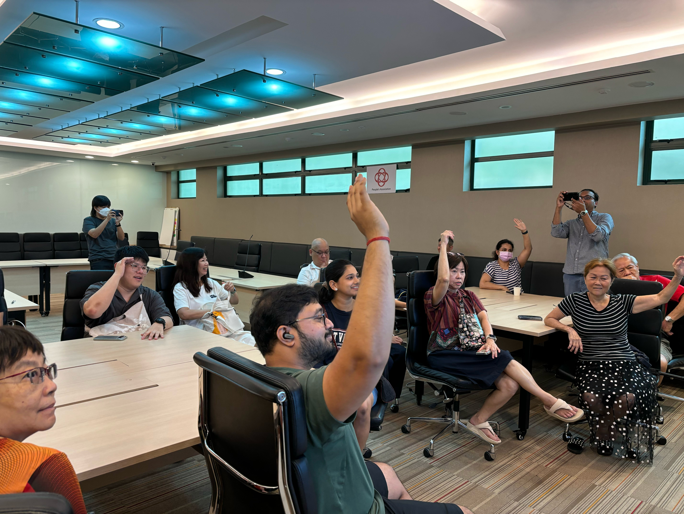
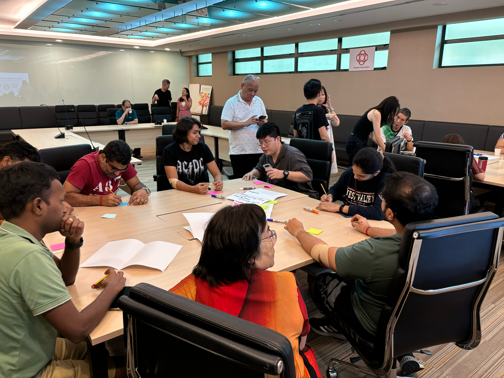
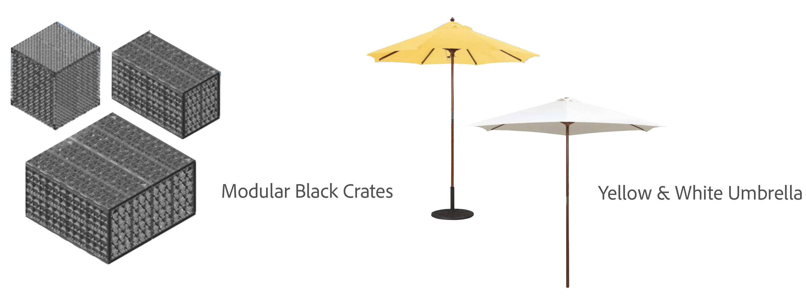
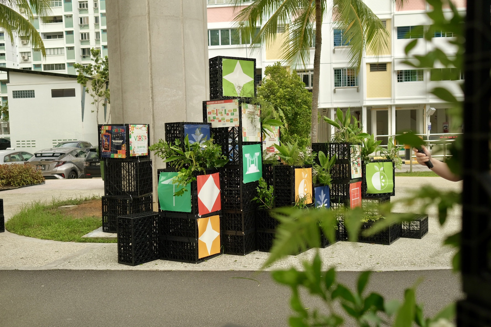

Viasta | ViaductGreen Festival
Viasta (Viaduct Festival) is a community-driven placemaking initiative that transforms an
underutilised viaduct in Changi Simei into a vibrant public space. Through participatory
design, sustainability-themed activities, and resident-led programming, the project reconnects
residents with their neighbourhood while demonstrating how overlooked urban spaces can become
inclusive, active, and meaningful community hubs. Building on the success of its first edition,
later iterations increasingly empowered residents to lead the festival's planning and programming,
establishing a sustainable community-led model.
My involvement included co-leading community workshops with residents to develop the festival theme,
coordinating across grassroots leaders, residents, volunteers, and SUTD students, and supporting event
planning, curation, and on-site delivery. As the festival continued to evolve, I also contributed
graphic design and consultation for Viasta 4.0, supporting its transition into an independently sustained,
resident-led initiative. And as of the latest Viasta, I participated as a booth owner under
Singapore University of Technology and Design.

Socio-Spatial Research and Design
Singapore
Aug 2024-Nov 2024
Oct 2025-Nov 2025
May 2026
Project Managemnt, Coordination, Design
Project Details.

1. Project Background.
The Joyful Village project envisions five interconnected sites forming a continuous network of community spaces linked by shared activities beneath the MRT viaduct. This collective spine, Joyful Village @ Changi Simei, strengthens the connection between residents, neighborhoods, and the SUTD campus. The Simei viaduct was chosen as the pilot site to test this concept, as it serves as a common ground shared by all Changi Simei residents.
2. Development of Viasta 1.0 | Participatory Design.
Viasta 1.0 was initiated by SUTD students from the Social Architecture course in collaboration with the Changi Simei Grassroots Committee. A participatory design workshop was held to reimagine the underutilized viaduct space, beginning with AIgenerated images that visualized different future possibilities for the site. Residents were invited to share feedback on these images and later took part in a covisioning exercise, creating collages from selected visuals to express their personal preferences and collective vision—ideas that ultimately shaped the first Viasta festival with the theme of “Vibrant, Care, Green”.


3. Viasta 2.0 | Development & Curation.
During the planning of Viasta 2.0, a workshop was held with residents who had volunteered in the first edition and grassroot committee, aiming to encourage greater community leadership and initiative. Together, residents co-developed the theme Food, Fix, Flashback—a continuation of the festival’s sustainable and community-driven vision that celebrated Simei’s history and local talents. The session successfully led to the formation of a resident volunteer committee that went on to plan and run the festival booths.



4. Design Elements | Kit-of-Parts.
Modular black crates formed the core design system, easily reconfigured for displays, booth separation, and spatial definition. Paired with yellow and white umbrellas that provided shade and vibrancy, these simple elements became the signature features of Viasta, carried forward in later editions to reinforce its unique identity.


5. Images of Viasta.
My journey with Viasta reflects the project's evolution. I first experienced the festival as a visitor,
later co-led its curation and coordination, then gradually stepped back into a supporting role through
graphic design and consultation. Most recently, I returned as a booth owner, completing a full-circle
journey that illustrates how an underutilized public space can grow into a thriving, community-led initiative,
where residents take ownership and stewardship of both the event and the place itself.
Read more about my journey and involvement in Viasta, from its first edition to the latest, here: Viasta Linkedin Post.
